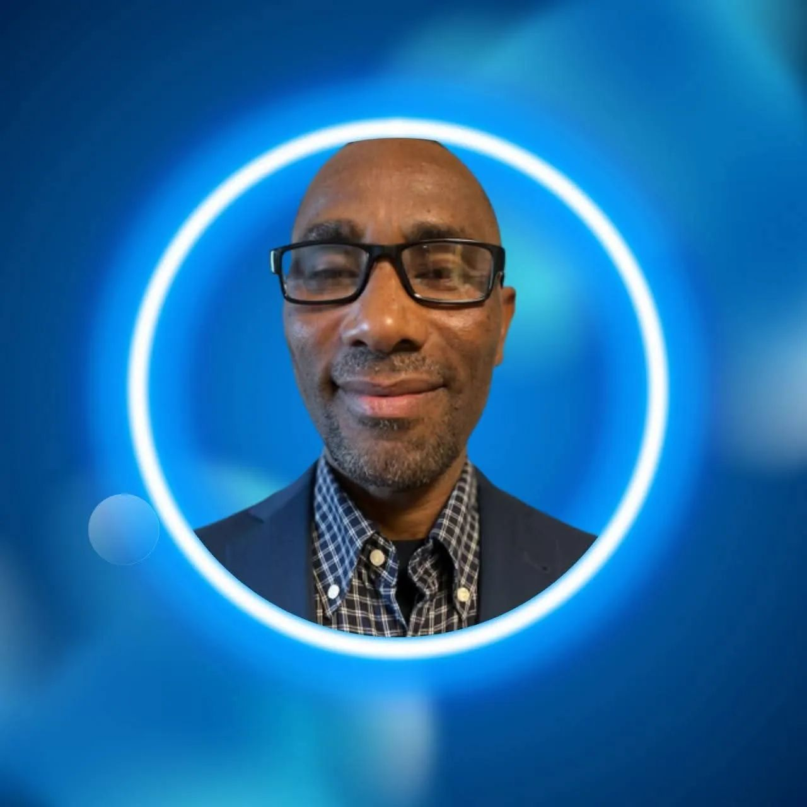
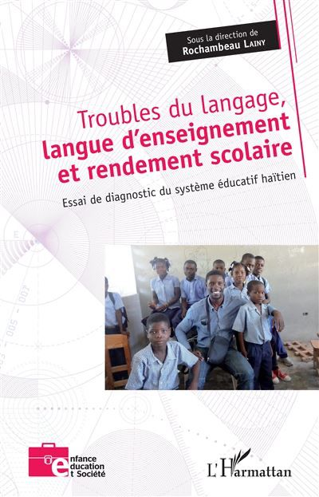
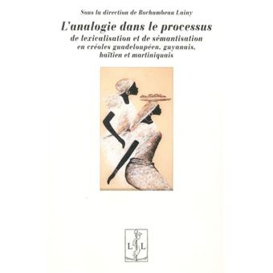
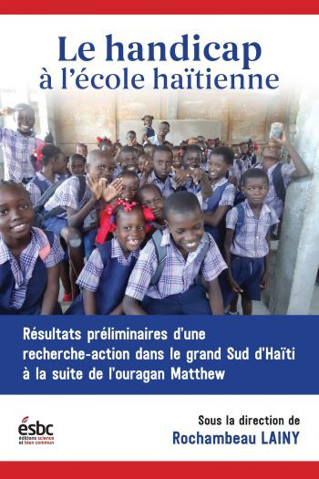
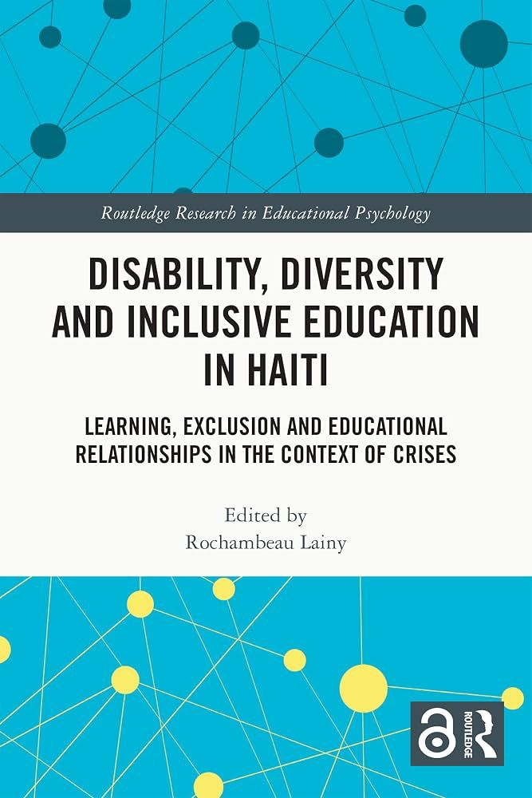

1
Les débuts dans l’enseignement
Il commence à enseigner et intervient à différents niveaux du système éducatif haïtien, tout en participant à des campagnes d’alphabétisation.
En mémoire de
25 OCTOBRE 1968 — 19 AOÛT 2026
Une vie consacrée à l’enseignement, à la recherche linguistique et à la transmission des savoirs en Haïti.Découvrir son parcours ↓

Enseignant, chercheur, bâtisseur
Docteur en linguistique de l’Université de Rouen Normandie et enseignant-chercheur à l’Université d’État d’Haïti, Rochambeau Lainy a consacré son parcours à l’enseignement supérieur, à la recherche et au développement des savoirs en Haïti.
Membre du Conseil de l’UEH, de l’Académie du créole haïtien et du laboratoire LangSÉ, il fut également directeur fondateur du GIECLAT. Son engagement s’est traduit par la création et la direction de plusieurs institutions, notamment le Learnopolis Institute of Language et l’Institut de sondage AZ-Opi.
À travers ses responsabilités académiques, scientifiques et institutionnelles, il a contribué à la promotion de la recherche linguistique, de l’éducation et à la valorisation des savoirs en Haïti.
Repères biographiques
De l’enseignement à la recherche universitaire, son itinéraire témoigne d’une attention constante portée au langage, à l’apprentissage et à l’éducation.
Il commence à enseigner et intervient à différents niveaux du système éducatif haïtien, tout en participant à des campagnes d’alphabétisation.
Il soutient à l’Université de Rouen une thèse consacrée au temps et à l’aspect dans l’énonciation rapportée, comparant le français et le créole haïtien.
Il devient membre de l’Académie du créole haïtien et fonde le GIECLAT, consacré à l’étude de la cognition, du langage, de l’apprentissage et des troubles.
Il rejoint durablement le laboratoire Langue, Société, Éducation de l’Université d’État d’Haïti et poursuit la direction de projets scientifiques.
Publications choisies
Ses travaux abordent notamment la linguistique, la psychopédagogie, le handicap, l’inclusion et les relations entre langue d’enseignement et réussite scolaire.

Essai de diagnostic du système éducatif haïtien

Approche comparative des créoles

Recherche-action dans le Grand Sud d’Haïti

Learning, exclusion and educational relationships
Son héritage
Le professeur Lainy laisse derrière lui une œuvre considérable consacrée notamment à la psychopédagogie, au handicap et à l’éducation. Elle témoigne de son profond engagement en faveur de la recherche, de l’inclusion et de la transmission des connaissances.
Faire vivre sa mémoire
Ce mémorial pourra prochainement accueillir les souvenirs, témoignages et photographies de ses collègues, étudiants, amis et proches.